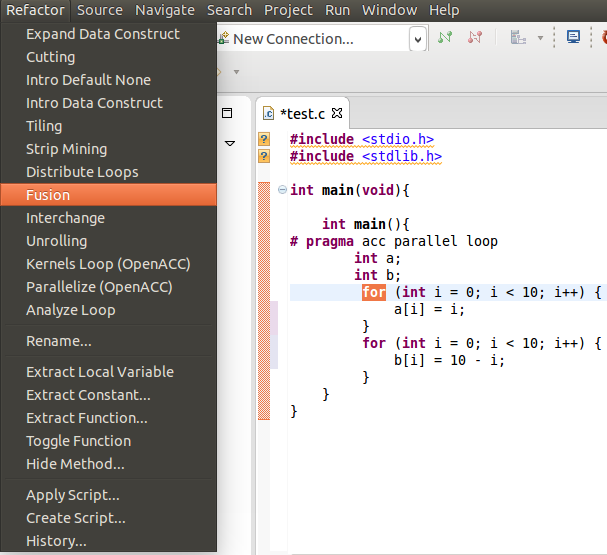
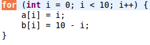

Description:Combines two adjacent loops into one.
Example:
- 1. Select the desired for loop to be changed and choose Fusion under the Refactoring menu.

- 2. The resulting Loop.

Use:
Restrictions:
1. The selected loop must have a for loop directly following it.
2. The loop headers must be identical.
3. Loops that have a pragma may not be Fused unless both loops have identical pragmas.